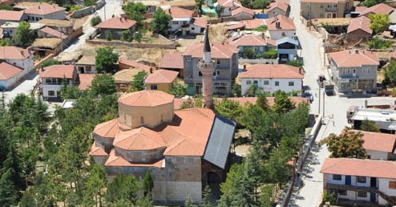
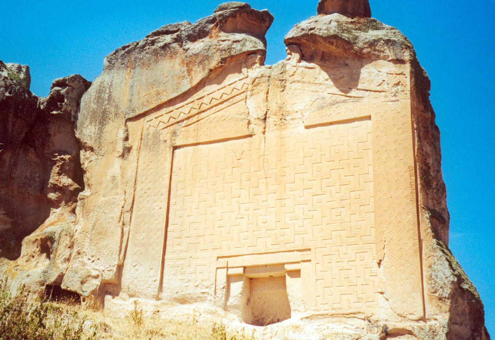

HAN
Han, Eskişehir ilinin bir ilçesidir ancak Ege Bölgesi'nde yer alır.
Nüfusu 2.100 kişi olup bu bakımdan 922 ilçe arasında sondan üçüncüdür.
TARİHİ
Kanuni Sultan Süleyman devrine ait Mühimme Defterinde Han, Han-ı Barçın Kazası olarak geçmekte ve 119 tane köyünün bulunduğu belirtilmektedir.
Sınırları ise bugünkü Emirdağ’ın tamamı,
İscehisar’ın kuzey kısımları, Bayat’ın tamamı, Sivrihisar’ın bir kısmı,
Haymana’nın bir kısmını içine almaktadır. Hatta günümüzde Sultandağı’na bağlı Çaykışla’nın,
maliye müdevver defterinde Han’a bağlı olduğu belirtilmiştir.
Daha sonra eskiden kendisine bağlı olan Emirdağ'a bağlanmış
ve 1963'e kadar Afyon'un (bugünkü Afyonkarahisar) iline bağlı bu ilçenin parçası olmuştur.
Daha sonra Çifteler ilçesine bucak olarak bağlanan Han,
15 Mayıs 1967’de belde, 20 Mayıs 1990 tarihinde çıkarılan 3644 sayılı Kanun ile ilçe statüsüne kavuşmuştur.
Daha önce Afyonkarahisar ili İscehisar ilçesine dahil Gökçeyayla köyü 16.02.1993 tarih ve 93/41433 sayılı kararla Han ilçesine bağlanmıştır.
Barçın'ın kelime anlamı ipek böceği yetiştiricisi olup, o dönemde bölgede ipek böceği yetiştiriciliği ile uğraşıldığı anlaşılmaktadır.


İnönü İlçesi Hakkında Bilgi Almak İçin Tıklayınız.